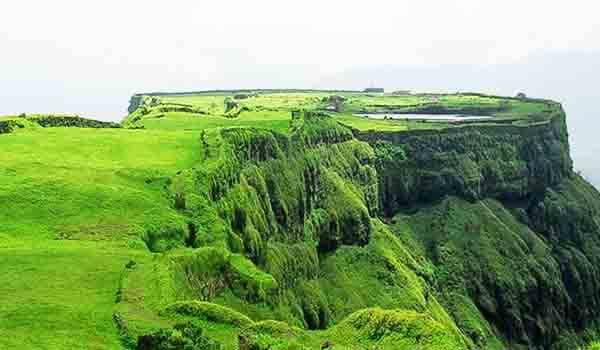
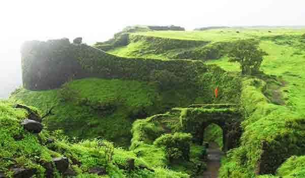

Korigad is a hill fort located about 20 km south of Lonavla in Pune district, Maharashtra, India. Korigad Fort is one of the scenic spots showcasing the grandeur of Chatrapati Shivaji Maharaja’s Legacy. It is about 923 m above sea level. The serenity of the site is maintained with the three elegant temples that are built on the notch of the peak.
From the base point, which is the Peth Shahpur village there’s a staircase of 600 stairs that you need to traverse to reach the fort. At this fort, you can take a deep insight into the lifestyle of Chhatrapati Shivaji Maharaj. Korigad, also called Koraigad.
On the top of the fort is a huge plateau. There is temple of Goddess Korai Devi on the fort and the idol of Korai Devi is around 4 feet. There are many bastions on the Southern side of the fort. There are 6 cannons and two more temples on this fort. Of these, the biggest cannon named Laxmi lies next to the Korai Devi temple. There are also two lakes on the top of the fort and ahead of them are two caves. The trek is easy and it would take an hour to reach to the top of the fort.